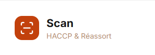

Branding
Logo du Projet

Description
Objectif du projet
Cette page sert de squelette pour presenter un projet de programmation d'application web WPA : contexte, architecture, fonctionnalites, stack technique et resultats.
Le contenu final pourra etre complete avec les captures d'ecran, details fonctionnels, choix techniques et bilans de performances.
Fonctionnalites
Base fonctionnelle
- Authentification utilisateur et gestion des roles
- CRUD principal sur les ressources metier
- Interface responsive desktop et mobile
- Journalisation des actions importantes
- Validation des donnees cote client et cote serveur
Architecture
Organisation technique
Le projet WPA est structure autour d'une separation claire entre presentation, logique metier et persistance des donnees, avec une API pour les echanges entre frontend et backend.
- Frontend compose de vues modulaires reutilisables
- Backend expose en endpoints API securises
- Base de donnees relationnelle avec contraintes d'integrite
- Preparation au deploiement continu
Stack technique
Technologies utilisees
Resultats
Bilan provisoire
Ce squelette est pret a etre complete pour la presentation finale du projet WPA, avec une structure coherente et reutilisable pour les projets futurs.